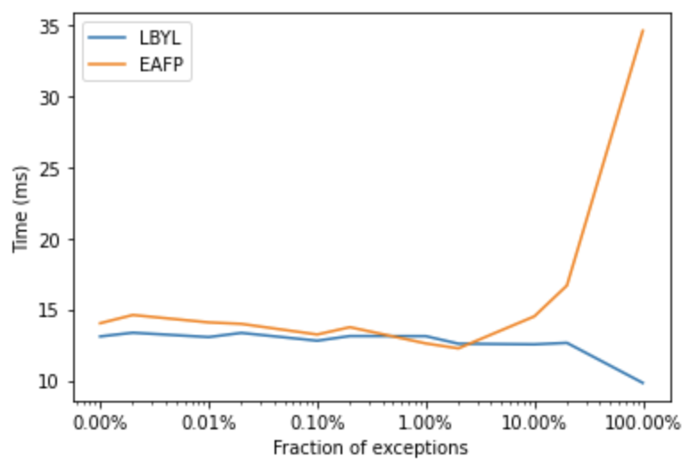

There are two programming styles: look before you leap (LBYL) and easier to ask for forgiveness than permission (EAFP). There are pros and cons of both styles, EAFP in some cases may be more readable and sometimes considered as more idiomatic in Python and other modern languages. Both styles are best illustrated with an example. Say that we are implementing a function that needs to divide two numbers, so it could fail due to ZeroDivisionError. Below, I marked with + the additional steps that will be taken when the exception would not appear, and with - the steps that are taken when it would appear. To look before we leap, we would check if the number is non-zero and only then run the division.
+ if x != 0:
return y/xBut instead, it might be easier to ask for forgiveness than permission: divide the numbers, but when it doesn’t work due to ZeroDivisionError, handle the exception.
try:
- return y/x
- except ZeroDivisionError:
passIn the first case, there is a constant overhead due to checking the precondition. In the second case, there is an overhead when the exception is raised, because in such a case, we do the general computation, raise an exception, then check if we should catch and handle the exception. Let’s try some benchmarks.
def lbyl(x):
if x != 0:
return 1/x
else:
return 0
def eafp(x):
try:
return 1/x
except ZeroDivisionError:
return 0When x == 0 LBYL would always skip, while EAFP would always raise and catch the exception. In such a case, EAFP is considerably slower.
%%timeit -n 1000000
lbyl(0)
# 87.1 ns ± 6.41 ns per loop (mean ± std. dev. of 7 runs, 1000000 loops each)%%timeit -n 1000000
eafp(0)
# 313 ns ± 6.09 ns per loop (mean ± std. dev. of 7 runs, 1000000 loops each)With x != 0, LBYL uses the default code path, while EAFP just does the computation, so it is faster because it doesn’t do any additional checks for preconditions.
%%timeit -n 1000000
lbyl(1)
# 99.6 ns ± 4.83 ns per loop (mean ± std. dev. of 7 runs, 1000000 loops each)%%timeit -n 1000000
eafp(1)
# 88.4 ns ± 4.7 ns per loop (mean ± std. dev. of 7 runs, 1000000 loops each)And now, let’s try different degrees of error rates.
from timeit import timeit
number_of_errors = [1, 5, 10, 50, 100, 500, 1_000, 5_000, 10_000, 50_000, 100_000]
avg_run_times = {}
steps = 1_000_000
def call(func, n):
for i in range(steps):
func(i % n)
for f in [lbyl, eafp]:
times = []
for n in number_of_errors:
t = timeit(lambda: call(f, n), number=100)
times.append(t)
avg_run_times[f.__name__] = timesAs we can see below, for code that always fails (100% error rate), there’s a big overhead for EAFP. The overhead for EAFP drops with exceptions happening more rarely.

What does it show? There is an overhead for EAFP only when it needs to catch a lot of exceptions, when they happen rarely (what should be the case), there is no overhead relatively to LBYL.